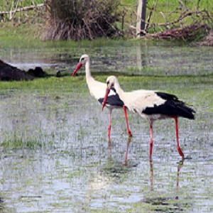

Kızılırmak Kuş Cenneti

Kızılırmak Deltası, Kızılırmak nehrinin taşıdığı alüvyonlar ile oluşan, ülkemizdeki en büyük
deltalardan biridir. Samsun ilinin Bafra, Engiz ve Alaçam ilçe sınırları içerisinde yer
almaktadır.
Kızılırmak deltasının doğal özellikleri büyük ölçüde korunabilmiştir. Ülkemizin Karadeniz
kıyısındaki tek sulak alanıdır. Deltanın eşine az rastlanır bir biyolojik çeşitliliğe sahip
olmasını sağlayan unsurlar farklı ekolojik karakterlerdeki habitatların bir arada bulunması
(deniz, göl, ırmak, mera, sazlık, kumul, çayır, orman, bataklık ve tarım alanları gibi), besin
maddelerince zenginlik ve uygun iklim koşulları oluşturmaktadır.
Deltada yedi tane göl bulunmaktadır. Bunlardan altısı doğu, biri batı yakasındadır. Batıda
yer alan, Karaboğaz Gölü’dür. Gölün toplam alanı, çevresindeki bataklık ve sazlık alanlar
ile birlikte 1400 hektardır. Doğuda yer alan göller ise Tatlı Göl, Balık Gölü, Gıcı Gölü,
Çernek Gölü, Uzun Göl ve Liman Gölü’dür. Göllerin suları az tuzludur. Sadece Balık Gölü’nün
denizle bağlantısı vardır. Bu gölde denizden su girişinin olduğu dönemlerde tuzluluk oranı
artmaktadır.
Tamamı sığ olan göllerin en derin yeri 3 metreyi geçmez. Su seviyesinin yüksek olduğu
dönemlerde de durum değişmez.